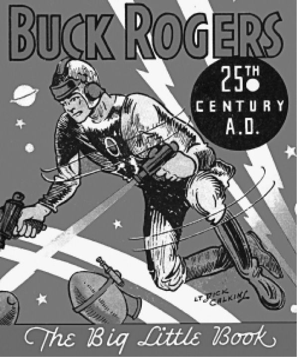

根据帝国主义的逻辑，行星都是有待征服的，所以星战小说在帝国主义巅峰时期应运而生就并非巧合了。实际上，太空歌剧的核心就是冒险故事范式，这个核心被认为是探险和殖民征服的神话表现形式。在匿名作者创作的《海外来客》（1887）中，美国征服了整个地球，地球上的殖民者渐次飞往了月球、金星、火星、木星、土星和小行星。该小说为后来的科幻作品确立了一种模式，它把行星当作假想中的国家或者殖民地，从而把地球上的领土争端移置到了太阳系。星球之间爆发了贸易争端，但是并没有继以战争，这点不同于罗伯特·威廉·科尔的《帝国反击》（1900）。科尔的这部小说以2236年为时代背景中的起点，展示了英国强权下的宇宙和平，这么说是因为在小说中是盎格鲁–撒克逊人统治了世界，他们发明了用于太空航行的“星际飞船”。当时，地球和天狼星之间爆发了战争，天狼星上的居民和人类在各方面都相似，但是他们的战争科技更加先进。庞大的天狼星舰队击败了地球帝国，迫使地球帝国退守大本营，而伦敦遭到了轰炸。看起来伦敦和整个帝国已经注定要失败，但是一位英国科学家发明了一种发射冲击波的装置，突然间决定性地改变了战局。盎格鲁–撒克逊人再次征服了太空并且轰炸了天狼星人的都城，迅速地征服了天狼星。
这些早期的太空帝国想象为后来所谓的“太空歌剧”定下了基调。两次世界大战之间，太空歌剧故事开始出现在廉价的通俗刊物上。“太空歌剧”这个词出现于1941年，首先是用来批判科幻小说的，在20世纪80年代之前它一直都是个贬义词，后来才被重新定义，用来指代科幻冒险叙事。在其词义发生变迁的时期，太空歌剧经历了一次复兴，涌现了诸如伊恩·M.班克斯、大卫·布林和丹·西蒙斯这样的作家，他们把太空歌剧这个科幻亚类型发展为一种更加精巧的叙事模式。两次世界大战期间，诞生了两部特别重要的太空歌剧。第一部由两个相关的故事构成，菲利普·弗朗西斯·诺兰在1928至1929年发表了这两个故事，推出了安东尼·罗杰斯这个人物，没多久，该人物在随后的连载漫画中又改名为巴克。
在合订本《善恶大决战：公元2419年》中，主人公在美国成为最强大国家之际进入休眠，到了25世纪又苏醒过来，发现自己的国家在残忍的种族的统治下已经成为废墟。诺兰的故事从本质上来说是增添了未来武器的“黄祸”故事。随后发生的事情就是巴克为美国和全世界争取自由，一劳永逸地击败“全世界最邪恶的种族”。巴克·罗杰斯这类货色能够在20世纪70年代死灰复燃，其原因我们马上就能看到。太空歌剧的第二部形成性叙事也来自同一个时期，那就是E.E.“多克”·史密斯的《太空云雀号》（1928），这部作品为设立太空歌剧常规的主角做出了贡献。理查德·西顿既是科学家又是运动员，是一位“天生的斗士”，简而言之，是位干练的行动派。在小说的开篇，西顿发现了太空航行所需要的能量，一艘太空船由此得以建成，这艘船即书名中的“云雀号”。这标志着现代性在科幻作品中的登场，在早期的太空旅行描写中，个人的激情是促成太空船建设的主要因素，它在这里已经为商业模式所取代。每一个英雄都需要一个恶棍作为对手，在这部小说中，坏人的角色由世界钢铁公司寡廉鲜耻的代表所扮演，这个家伙驾驶“云雀号”的复制品飞向了太空，同船的是不幸的多萝西——西顿的女友。小说的前半部分讲述了西顿如何追踪该飞船并营救多萝西，从那时起，“云雀号”就飞临不同的星球，有些星球上面的居民自己就拥有尖端的飞船。经过一系列伯勒斯式的被俘和脱逃，我们的主人公安全地带着伙伴们回到了地球。

图1 《巴克·罗杰斯在公元25世纪》（1933）的封面
这两部作品放在一起，就构成了太空歌剧的基本特征：理想化的男主角、未来武器（如激光枪）、异域色彩浓厚的意外情节和黑白分明的善恶斗争。乔治·卢卡斯在1977年的《星球大战》电影中就运用了这些元素，将巴克·罗杰斯同来自黑泽明电影的战斗场景结合了起来，其情节发展借鉴了约瑟夫·坎贝尔的研究著作《千面英雄》。“星球大战”系列取得了前所未有的巨大商业成功，除了拍摄续集和前传之外，又催生了其他的电影和动画片、大量的衍生系列小说、电影索引指南以及林林总总的电脑、视频游戏。20世纪60年代的电视剧《星际迷航》也在一定程度上受到了巴克·罗杰斯冒险故事的启发，但其剧情是由“联邦星际进取号”所做的一系列具有开放式结局的太空漫游构成的，用《星际迷航》当中的金句来说，“进取号”就是要“勇敢地前往无人涉足之地”。像哈伦·埃利森、西奥多·斯特金这样的科幻作家也入了写剧本这行，他们创作的剧集往往围绕遭遇外星文明的主题，这些系列片中的第一部讲述了地球人在太空中遭遇一艘外星飞船，船员是像人类孩子一样的生物。同“星球大战”系列一样，《星际迷航》也催生了几部电视连续剧、大量的小说和根据电视剧改编的小说。
《银河英雄比尔》对雅罗斯拉夫·哈谢克的《好兵帅克》做了未来版的重述，哈里·哈里森在这部小说里戏仿了太空歌剧中的军国主义和男权主义。比尔是误打误撞地加入了星际舰队，虽然他申辩说自己“不是当兵的料”。在一系列流浪汉小说式的冒险中，他遭遇了各种滑稽场面，他所呈现出来的品质与传统英雄气质相去甚远。波兰作家斯坦尼斯瓦夫·莱姆塑造的宇航员以云·蒂希和比尔异曲同工，这个人物描述了自己经历过的时间循环，参加过的银河行政会议，以及在其他星球的冒险活动。莱姆的写作风格冷峻素朴，同太空歌剧对英雄事迹的痴狂形成了一种讽刺性的对比。